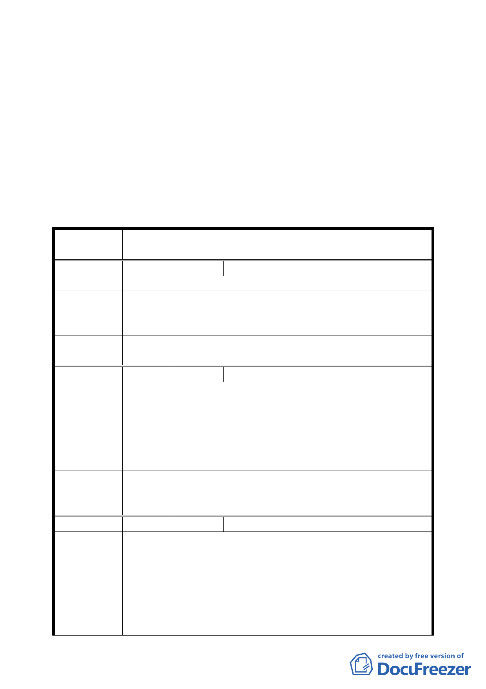

三、申請單位：臺北市政府（文化局）
四、計畫範圍：詳計畫圖所示
五、變更理由及內容：詳計畫書
六、公民若團體所提意見：共計 3 件
決議：
一、同意依提會補充資料及修正後計畫書修正通過。
二、公民或團體所提意見決議情形詳如所附綜理表。
臺北市都市計畫委員會公民或團體所提意見綜理表
案
名
變更臺北市北投區豐年段一小段 478、479 地號土地農業區為
保存區（農禪寺）主要計畫案
編 號 １ 陳情人 楊雯蘭等 16 人
陳 情 理 由 保存區無法確保大業路 65 巷及怡和巷居民的生活品質。
一、請確實考慮這一區居民的改建及變更需求。
建 議 辦 法 二、保存區需同時規劃好所有周邊的公共設施。
三、目前不予同意。
委 員 會 議 有關關渡平原相關開發及建築需求，由發展局另案統籌規劃
決 議 辦理。
編 號 2 陳情人 丘洛壽
既然農禪寺改為保存區，大業路 65 巷 1、2、4 弄也應改為保
陳情理由
存區，因為農禪寺的房屋和附近房屋是同時間建築的，怡和
巷也是為時三十餘年的房屋。因為此地區一下大雨就會淹
水，所以市政府要我們大家做防水門，每戶已補助 15000 元。
建議辦法
一、要先把週邊道路拓寬，下水道做好。
二、大業路 65 巷 1 至 4 弄及怡和巷改為保存區這樣才合理。
委員會議
決議
一、有關該基地對外交通動線規劃問題建議納入中長程計畫
中辦理。有關該基地排水問題請開發單位妥善處理。
二、該建議歉難採納。
編 號 3 陳情人 邱瓊瑛等 8 人
農禪寺土地變更案，鄰近的大業路 65 巷和怡和巷等居民有重
陳 情 理 由 大影響：目前農禪寺辦活動時所湧入人車已超過大業路 65 巷
負荷（有關交通動線，停車場等沒有特別的規劃）。
一、有交通動線必須有妥善替代方案建議由大度路規劃出入
建議辦法
通道和停車場等交通疏導措施
二、原有基地低窪，變更後地基地提高，緊鄰社區之排水系
統應特別設計排水系統和排洪系統，以免居民淹水。
四五